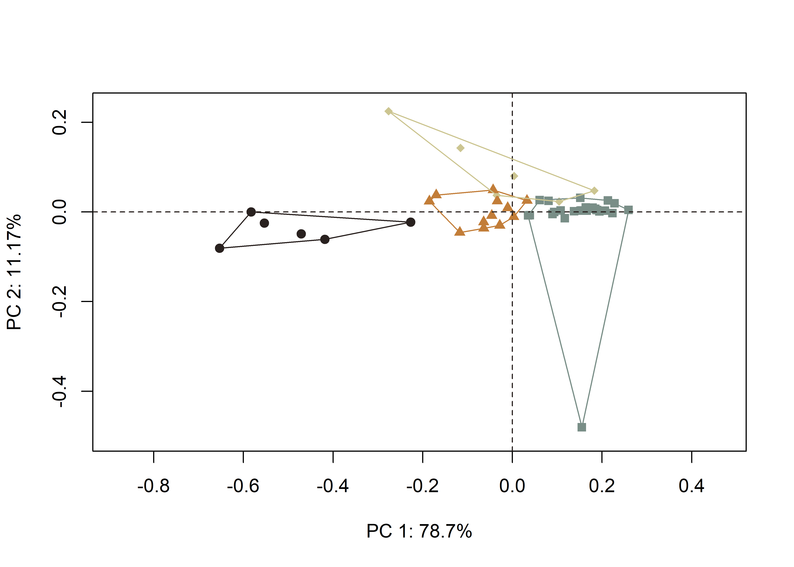
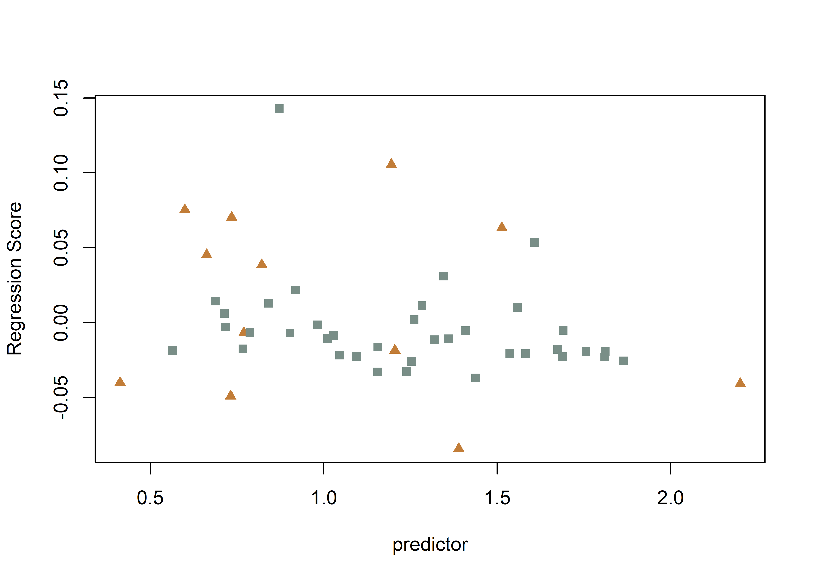
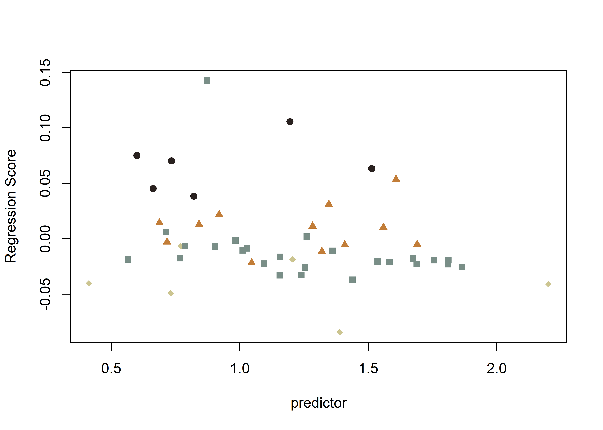
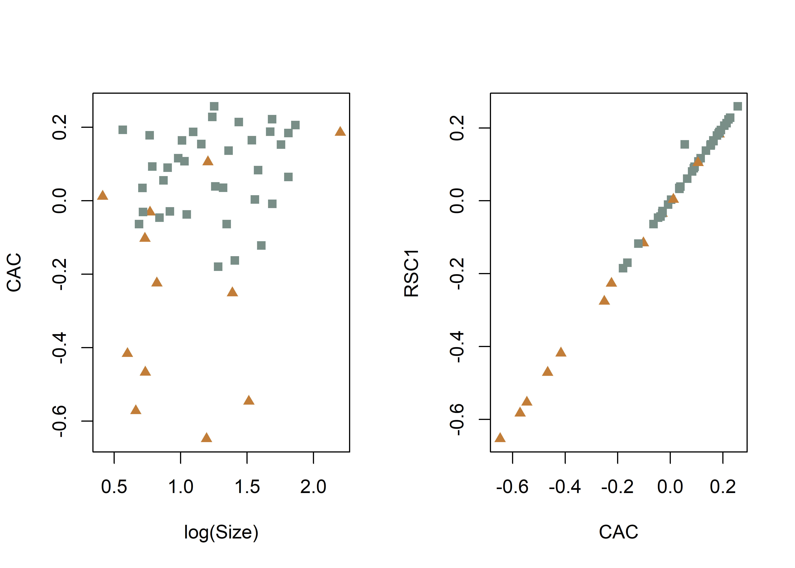
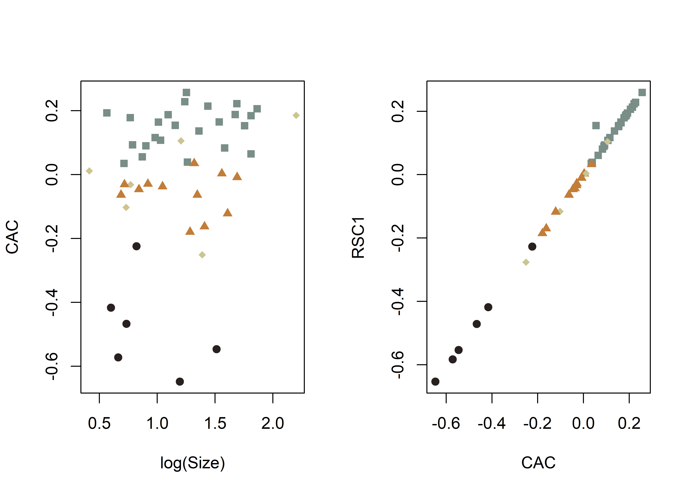
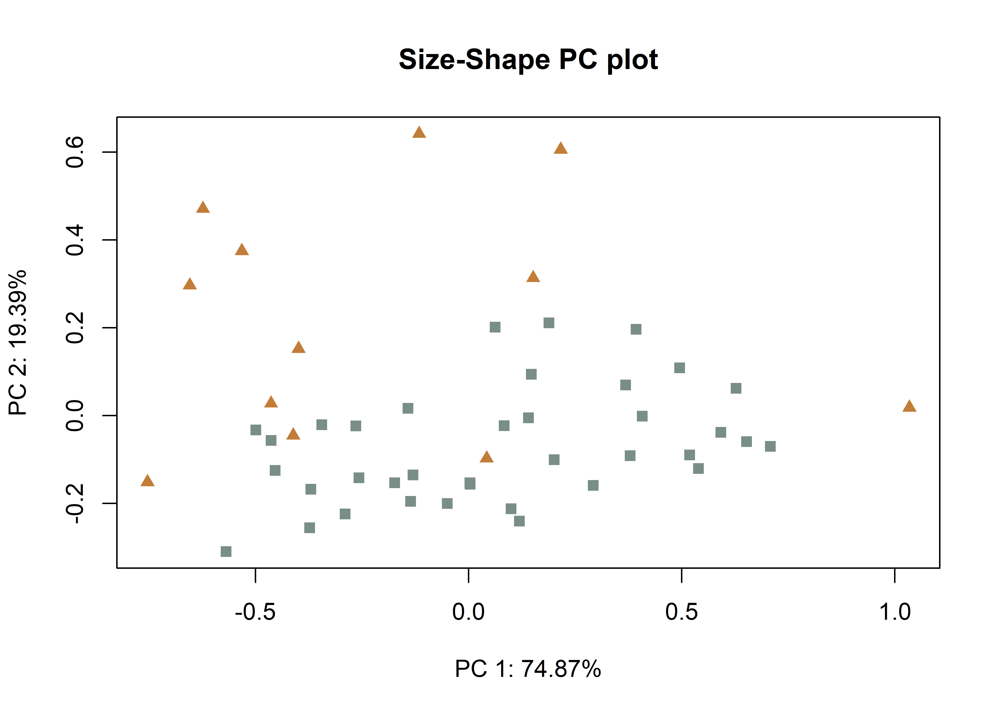
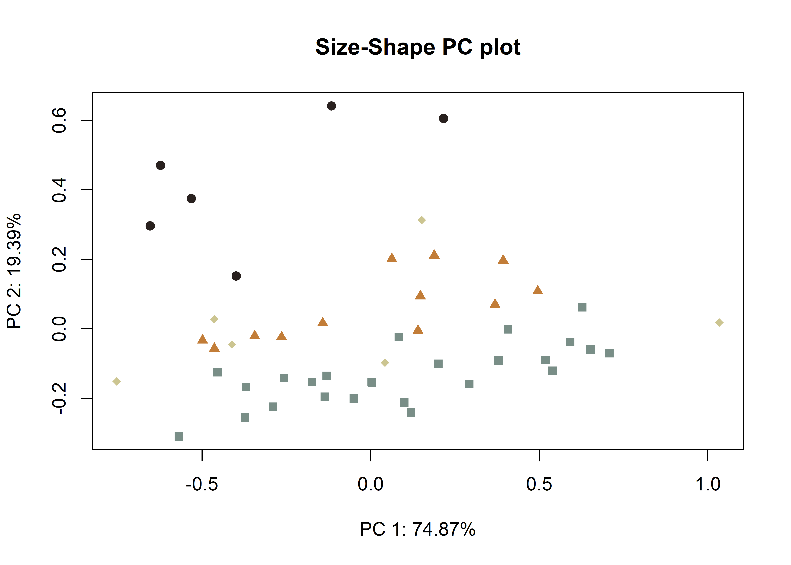
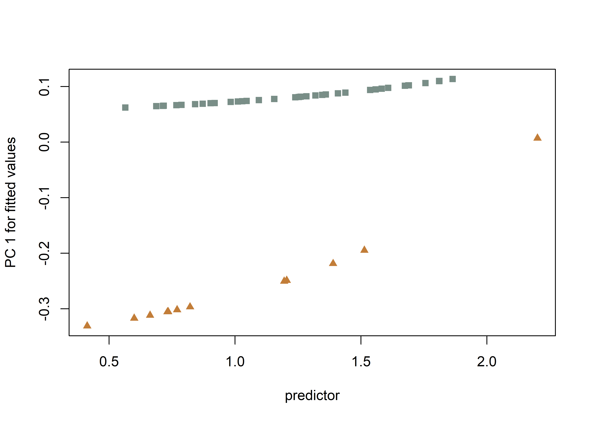
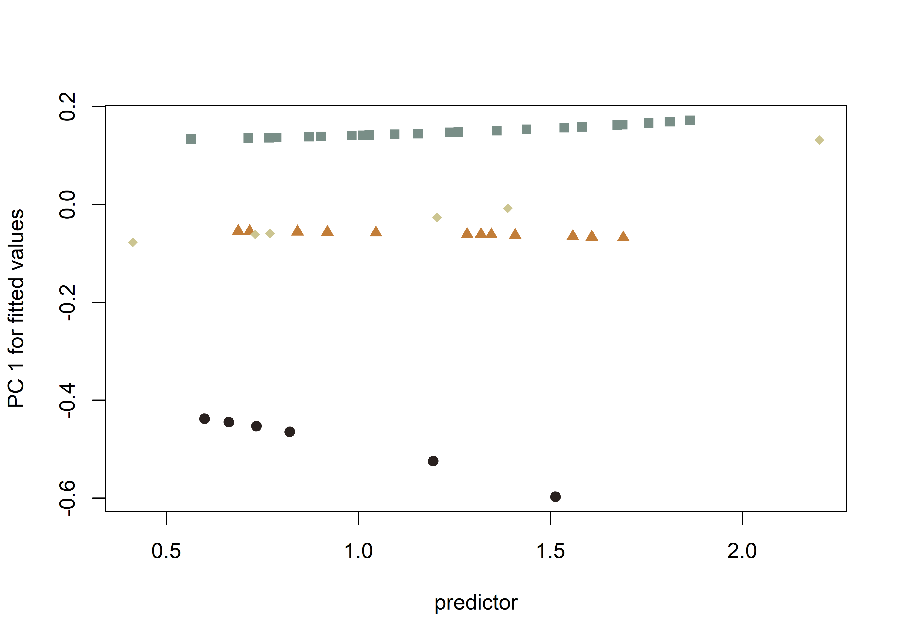

This volume is in Open Review. I want your feedback to make the volume better for you and other readers. To add your annotation, select some text and then click the on the pop-up menu. To see the annotations of others, click the in the upper right hand corner of the page
Chapter 5 Archaeological sample - analysis
5.1 Generalised Procrustes Analysis
# library(devtools)
# devtools::install_github("geomorphR/geomorph", ref = "Stable", build_vignettes = TRUE)
library(geomorph)
library(wesanderson)
setwd(getwd())
# read GM data
source('readmulti.csv.R')
# read .csv files
setwd("./data1")
filelist <- list.files(pattern = ".csv")
coords <- readmulti.csv(filelist)
setwd("../")
# read qualitative data
qdata <- read.csv("qdata1.csv",header=TRUE,row.names=1)
qdata <- qdata[match(dimnames(coords)[[3]],rownames(qdata)),]
qdata## site unit county incision inc2
## 41sa66-4 sa66 angelinaNF san-augustine v vv
## 41sa66-5 sa66 angelinaNF san-augustine u ub
## 41sa66-6 sa66 angelinaNF san-augustine u un
## 41sa66 sa66 angelinaNF san-augustine u ub
## 41sb125-11-lot50 sb125 sabineNF sabine u ub
## 41sb125-2-lot100 sb125 sabineNF sabine u un
## 41sb125-3-lot99 sb125 sabineNF sabine u un
## 41sb189-10-lot17 sb189 sabineNF sabine u ub
## 41sb189-9-lot17 sb189 sabineNF sabine u ub
## 41sb291-4-lot245 sb291 sabineNF sabine u un
## 41sb291-9-lot229 sb291 sabineNF sabine u ub
## 41sy258-st2-1020 sy258 sabineNF shelby v va
## 41sy258-st3-2030 sy258 sabineNF shelby u ub
## 41sy280-101 sy280 sabineNF shelby v va
## 41sy280-11 sy280 sabineNF shelby u ub
## 41sy280-127 sy280 sabineNF shelby u ub
## 41sy280-18 sy280 sabineNF shelby u ub
## 41sy280-20 sy280 sabineNF shelby u ub
## 41sy280-82 sy280 sabineNF shelby u ub
## 41sy280-84 sy280 sabineNF shelby u un
## 41sy280-lot107 sy280 sabineNF shelby u ub
## 41sy280-lot112 sy280 sabineNF shelby u ub
## 41sy280-lot125 sy280 sabineNF shelby u ub
## 41sy280-lot31 sy280 sabineNF shelby u un
## 41sy280-lot48 sy280 sabineNF shelby u ub
## 41sy280-lot50 sy280 sabineNF shelby v vv
## 41sy280-lot52 sy280 sabineNF shelby u un
## 41sy280-lot90 sy280 sabineNF shelby u ub
## 41sy280-lot91 sy280 sabineNF shelby u ub
## 41sy280-lot94 sy280 sabineNF shelby v vv
## 41sy43-1 sy43 sabineNF shelby v va
## 41sy43-13-1191 sy43 sabineNF shelby u ub
## 41sy43-19 sy43 sabineNF shelby u un
## 41sy43-fsn1-830 sy43 sabineNF shelby u ub
## 41sy43-k2-2737 sy43 sabineNF shelby u un
## 41sy43-k6-1020 sy43 sabineNF shelby u ub
## 41sy43-k8-17 sy43 sabineNF shelby v va
## 41sy43-lot1035 sy43 sabineNF shelby v vv
## 41tn91-u1-010 tn91 davycNF trinity u un
## 41tn91-u1-2030 tn91 davycNF trinity u ub
## 41tn91-u2-1020 tn91 davycNF trinity u un
## 41tn91-u2-lot17 tn91 davycNF trinity v vv
## 41tn91-u3-2030 tn91 davycNF trinity u ub
## 41tn91-u4-020 tn91 davycNF trinity u ub
## 41tn91-u4-4050 tn91 davycNF trinity u un
## 41tn91-u4-5060 tn91 davycNF trinity v vv
## 41tn91-u6-3040 tn91 davycNF trinity u ub
## 41tn91-u7-3040 tn91 davycNF trinity v va
## 41tn91-u8-1020 tn91 davycNF trinity v va# gpa
Y.gpa <- gpagen(coords, PrinAxes = TRUE, ProcD = TRUE, Proj = TRUE, print.progress = FALSE)
# gpa plot
knitr::include_graphics('images/gpa3d.png')
fig.cap="Results of generalized Procrustes analysis."
# geomorph data frame
gdf <- geomorph.data.frame(shape = Y.gpa$coords, size = Y.gpa$Csize, site = qdata$site, unit = qdata$unit, county = qdata$county, inc = qdata$incision, inc2 = qdata$inc2)
# attributes for boxplots
csz <- Y.gpa$Csize # centroid size
inc <- qdata$incision # basic incision profile
inc2 <- qdata$inc2 # incision profile + qualitative characteristics
cty <- qdata$county # attribute for boxplot
unt <- qdata$unit # attribute for boxplot
# boxplot of incision (centroid) size by profile type (inc)
boxplot(csz~inc,
main = "Centroid size of Caddo incisions by profile type",
names = c("V","U"),
xlab = "Profile",
ylab = "Centroid Size",
col = wes_palette("Moonrise2"),
)
fig.cap = "Boxplot of incision profile types (inc)."
# boxplot of incision (centroid) size by profile type (inc2)
boxplot(csz~inc2,
main = "Centroid size of Caddo incisions by profile type (inc2)",
names = c("V-V","V-A","U-N","U-B"),
xlab = "Profile",
ylab = "Centroid Size",
col = wes_palette("Moonrise2"),
)
5.2 Principal Components Analysis
##
## Ordination type: Principal Component Analysis
## Centering and projection: OLS
## Number of observations 49
## Number of vectors 49
##
## Importance of Components:
## Comp1 Comp2 Comp3 Comp4
## Eigenvalues 0.05005241 0.007101587 0.004207237 0.001010877
## Proportion of Variance 0.78696350 0.111656745 0.066149502 0.015893806
## Cumulative Proportion 0.78696350 0.898620247 0.964769748 0.980663554
## Comp5 Comp6 Comp7 Comp8
## Eigenvalues 0.0004000871 0.0002918061 0.0001356203 0.0001049297
## Proportion of Variance 0.0062904852 0.0045880063 0.0021323291 0.0016497880
## Cumulative Proportion 0.9869540391 0.9915420454 0.9936743745 0.9953241625
## Comp9 Comp10 Comp11 Comp12
## Eigenvalues 0.0000527297 4.893199e-05 4.140238e-05 2.795772e-05
## Proportion of Variance 0.0008290579 7.693473e-04 6.509609e-04 4.395733e-04
## Cumulative Proportion 0.9961532203 9.969226e-01 9.975735e-01 9.980131e-01
## Comp13 Comp14 Comp15 Comp16
## Eigenvalues 2.477753e-05 1.839935e-05 1.553619e-05 1.245841e-05
## Proportion of Variance 3.895719e-04 2.892891e-04 2.442723e-04 1.958810e-04
## Cumulative Proportion 9.984027e-01 9.986920e-01 9.989362e-01 9.991321e-01
## Comp17 Comp18 Comp19 Comp20
## Eigenvalues 1.099519e-05 8.857840e-06 6.205629e-06 4.605748e-06
## Proportion of Variance 1.728750e-04 1.392699e-04 9.756980e-05 7.241520e-05
## Cumulative Proportion 9.993050e-01 9.994443e-01 9.995418e-01 9.996142e-01
## Comp21 Comp22 Comp23 Comp24
## Eigenvalues 4.189723e-06 3.711596e-06 2.789934e-06 2.436159e-06
## Proportion of Variance 6.587413e-05 5.835663e-05 4.386554e-05 3.830321e-05
## Cumulative Proportion 9.996801e-01 9.997385e-01 9.997823e-01 9.998206e-01
## Comp25 Comp26 Comp27 Comp28
## Eigenvalues 2.014312e-06 1.668968e-06 1.638174e-06 1.185650e-06
## Proportion of Variance 3.167061e-05 2.624083e-05 2.575666e-05 1.864172e-05
## Cumulative Proportion 9.998523e-01 9.998786e-01 9.999043e-01 9.999230e-01
## Comp29 Comp30 Comp31 Comp32
## Eigenvalues 9.495449e-07 6.727711e-07 5.815500e-07 5.340935e-07
## Proportion of Variance 1.492949e-05 1.057784e-05 9.143587e-06 8.397439e-06
## Cumulative Proportion 9.999379e-01 9.999485e-01 9.999576e-01 9.999660e-01
## Comp33 Comp34 Comp35 Comp36
## Eigenvalues 4.357276e-07 3.526829e-07 3.270684e-07 2.945186e-07
## Proportion of Variance 6.850853e-06 5.545159e-06 5.142428e-06 4.630653e-06
## Cumulative Proportion 9.999729e-01 9.999784e-01 9.999835e-01 9.999882e-01
## Comp37 Comp38 Comp39 Comp40
## Eigenvalues 2.223463e-07 1.565223e-07 1.011302e-07 8.479653e-08
## Proportion of Variance 3.495905e-06 2.460967e-06 1.590049e-06 1.333238e-06
## Cumulative Proportion 9.999917e-01 9.999941e-01 9.999957e-01 9.999971e-01
## Comp41 Comp42 Comp43 Comp44
## Eigenvalues 6.032788e-08 4.167519e-08 3.236851e-08 2.524843e-08
## Proportion of Variance 9.485225e-07 6.552502e-07 5.089232e-07 3.969758e-07
## Cumulative Proportion 9.999980e-01 9.999987e-01 9.999992e-01 9.999996e-01
## Comp45 Comp46 Comp47 Comp48
## Eigenvalues 1.466766e-08 8.934916e-09 3.680275e-09 5.264413e-10
## Proportion of Variance 2.306165e-07 1.404818e-07 5.786418e-08 8.277125e-09
## Cumulative Proportion 9.999998e-01 9.999999e-01 1.000000e+00 1.000000e+00
## Comp49
## Eigenvalues 4.805676e-34
## Proportion of Variance 7.555862e-33
## Cumulative Proportion 1.000000e+00# set plot parameters to plot by incision type
inc <- qdata$incision
pch.gps.inc <- c(15,17)[as.factor(inc)]
col.gps.inc <- wes_palette("Moonrise2")[as.factor(inc)]
col.hull <- c("#C27D38","#798E87")
# plot pca by incision profile
pc.plot1 <- plot(pca, asp = 1,
pch = pch.gps.inc,
col = col.gps.inc)
shapeHulls(pc.plot1,
groups = inc,
group.cols = col.hull)
# set plot parameters to plot by incision profile (inc2)
inc2 <- qdata$inc2
pch.gps.inc2 <- c(15,17:19)[as.factor(inc2)]
col.gps.inc2 <- wes_palette("Moonrise2")[as.factor(inc2)]
col.hull2 <- c("#29211F","#798E87","#C27D38","#CCC591")
# plot pca by incision profile (inc2)
pc.plot2 <- plot(pca, asp = 1,
pch = pch.gps.inc2,
col = col.gps.inc2)
shapeHulls(pc.plot2,
groups = inc2,
group.cols = col.hull2)
5.3 Define models
# allometry
fit.size <- procD.lm(shape ~ size, data = gdf, print.progress = FALSE, iter = 9999)
# allometry - common allometry, different means -> inc
fit.sz.cinc <- procD.lm(shape ~ size + inc, data = gdf, print.progress = FALSE, iter = 9999)
# allometry - unique allometries -> inc
fit.sz.uinc <- procD.lm(shape ~ size * inc, data = gdf, print.progress = FALSE, iter = 9999)
# allometry - common allometry, different means -> inc2
fit.sz.cinc2 <- procD.lm(shape ~ size + inc2, data = gdf, print.progress = FALSE, iter = 9999)
# allometry - unique allometries -> inc2
fit.sz.uinc2 <- procD.lm(shape ~ size * inc2, data = gdf, print.progress = FALSE, iter = 9999)
# size as a function of group
fit.sizeinc <- procD.lm(size ~ inc, data = gdf, print.progress = FALSE, iter = 9999)
fit.sizeinc2 <- procD.lm(size ~ inc2, data = gdf, print.progress = FALSE, iter = 9999)
# shape as a function of group
fit.shapeinc <- procD.lm(shape ~ inc, data = gdf, print.progress = FALSE, iter = 9999)
fit.shapeinc2 <- procD.lm(shape ~ inc2, data = gdf, print.progress = FALSE, iter = 9999)5.4 Allometry
##
## Analysis of Variance, using Residual Randomization
## Permutation procedure: Randomization of null model residuals
## Number of permutations: 10000
## Estimation method: Ordinary Least Squares
## Sums of Squares and Cross-products: Type I
## Effect sizes (Z) based on F distributions
##
## Df SS MS Rsq F Z Pr(>F)
## size 1 0.17948 0.179482 0.05879 2.9358 1.4862 0.0684 .
## Residuals 47 2.87341 0.061136 0.94121
## Total 48 3.05289
## ---
## Signif. codes: 0 '***' 0.001 '**' 0.01 '*' 0.05 '.' 0.1 ' ' 1
##
## Call: procD.lm(f1 = shape ~ size, iter = 9999, data = gdf, print.progress = FALSE)##
## Analysis of Variance, using Residual Randomization
## Permutation procedure: Randomization of null model residuals
## Number of permutations: 10000
## Estimation method: Ordinary Least Squares
## Sums of Squares and Cross-products: Type I
## Effect sizes (Z) based on F distributions
##
## Df SS MS Rsq F Z Pr(>F)
## size 1 0.17948 0.17948 0.05879 4.2925 1.8379 0.0257 *
## inc 1 0.95004 0.95004 0.31119 22.7214 3.4812 1e-04 ***
## Residuals 46 1.92337 0.04181 0.63002
## Total 48 3.05289
## ---
## Signif. codes: 0 '***' 0.001 '**' 0.01 '*' 0.05 '.' 0.1 ' ' 1
##
## Call: procD.lm(f1 = shape ~ size + inc, iter = 9999, data = gdf, print.progress = FALSE)##
## Analysis of Variance, using Residual Randomization
## Permutation procedure: Randomization of null model residuals
## Number of permutations: 10000
## Estimation method: Ordinary Least Squares
## Sums of Squares and Cross-products: Type I
## Effect sizes (Z) based on F distributions
##
## Df SS MS Rsq F Z Pr(>F)
## size 1 0.17948 0.17948 0.05879 4.2822 1.8273 0.0266 *
## inc 1 0.95004 0.95004 0.31119 22.6668 3.4709 1e-04 ***
## size:inc 1 0.03728 0.03728 0.01221 0.8895 0.3363 0.3730
## Residuals 45 1.88609 0.04191 0.61780
## Total 48 3.05289
## ---
## Signif. codes: 0 '***' 0.001 '**' 0.01 '*' 0.05 '.' 0.1 ' ' 1
##
## Call: procD.lm(f1 = shape ~ size * inc, iter = 9999, data = gdf, print.progress = FALSE)##
## Analysis of Variance, using Residual Randomization
## Permutation procedure: Randomization of null model residuals
## Number of permutations: 10000
## Estimation method: Ordinary Least Squares
## Effect sizes (Z) based on F distributions
##
## ResDf Df RSS SS MS Rsq F
## shape ~ size + inc (Null) 46 1 1.9234 0.000000
## shape ~ size * inc 45 1 1.8861 0.037282 0.037282 0.012212 0.8895
## Total 48 3.0529
## Z P Pr(>F)
## shape ~ size + inc (Null)
## shape ~ size * inc 0.33629 0.373
## Total##
## Analysis of Variance, using Residual Randomization
## Permutation procedure: Randomization of null model residuals
## Number of permutations: 10000
## Estimation method: Ordinary Least Squares
## Sums of Squares and Cross-products: Type I
## Effect sizes (Z) based on F distributions
##
## Df SS MS Rsq F Z Pr(>F)
## size 1 0.17948 0.17948 0.05879 9.1735 2.5423 0.0018 **
## inc2 3 2.01254 0.67085 0.65922 34.2875 5.7006 1e-04 ***
## Residuals 44 0.86087 0.01957 0.28199
## Total 48 3.05289
## ---
## Signif. codes: 0 '***' 0.001 '**' 0.01 '*' 0.05 '.' 0.1 ' ' 1
##
## Call: procD.lm(f1 = shape ~ size + inc2, iter = 9999, data = gdf, print.progress = FALSE)##
## Analysis of Variance, using Residual Randomization
## Permutation procedure: Randomization of null model residuals
## Number of permutations: 10000
## Estimation method: Ordinary Least Squares
## Sums of Squares and Cross-products: Type I
## Effect sizes (Z) based on F distributions
##
## Df SS MS Rsq F Z Pr(>F)
## size 1 0.17948 0.17948 0.05879 9.2159 2.5291 0.0022 **
## inc2 3 2.01254 0.67085 0.65922 34.4462 5.6510 1e-04 ***
## size:inc2 3 0.06239 0.02080 0.02044 1.0679 0.3723 0.3272
## Residuals 41 0.79848 0.01948 0.26155
## Total 48 3.05289
## ---
## Signif. codes: 0 '***' 0.001 '**' 0.01 '*' 0.05 '.' 0.1 ' ' 1
##
## Call: procD.lm(f1 = shape ~ size * inc2, iter = 9999, data = gdf, print.progress = FALSE)##
## Analysis of Variance, using Residual Randomization
## Permutation procedure: Randomization of null model residuals
## Number of permutations: 10000
## Estimation method: Ordinary Least Squares
## Effect sizes (Z) based on F distributions
##
## ResDf Df RSS SS MS Rsq F
## shape ~ size + inc2 (Null) 44 1 0.86087 0.000000
## shape ~ size * inc2 41 3 0.79848 0.062391 0.020797 0.020437 1.0679
## Total 48 3.05289
## Z P Pr(>F)
## shape ~ size + inc2 (Null)
## shape ~ size * inc2 0.37229 0.3272
## Total# allometry plots
# regscore (Drake and Klingenberg 2008)
plot(fit.size, type = "regression", reg.type = "RegScore", predictor = log(gdf$size), pch = pch.gps.inc, col = col.gps.inc)

# common allometric component (Mitteroecker 2004)
plotAllometry(fit.size, size = gdf$size, logsz = TRUE, method = "CAC", pch = pch.gps.inc, col = col.gps.inc)

# size-shape pca (Mitteroecker 2004)
plotAllometry(fit.size, size = gdf$size, logsz = TRUE, method = "size.shape", pch = pch.gps.inc, col = col.gps.inc)

# predline (Adams and Nistri 2010)
plotAllometry(fit.sz.uinc, size = gdf$size, logsz = TRUE, method = "PredLine", pch = pch.gps.inc, col = col.gps.inc)

5.5 Size/Shape ~ Incision Profile?
##
## Analysis of Variance, using Residual Randomization
## Permutation procedure: Randomization of null model residuals
## Number of permutations: 10000
## Estimation method: Ordinary Least Squares
## Sums of Squares and Cross-products: Type I
## Effect sizes (Z) based on F distributions
##
## Df SS MS Rsq F Z Pr(>F)
## inc 1 1.0443 1.04433 0.34208 24.437 3.5466 1e-04 ***
## Residuals 47 2.0086 0.04274 0.65792
## Total 48 3.0529
## ---
## Signif. codes: 0 '***' 0.001 '**' 0.01 '*' 0.05 '.' 0.1 ' ' 1
##
## Call: procD.lm(f1 = shape ~ inc, iter = 9999, data = gdf, print.progress = FALSE)##
## Analysis of Variance, using Residual Randomization
## Permutation procedure: Randomization of null model residuals
## Number of permutations: 10000
## Estimation method: Ordinary Least Squares
## Sums of Squares and Cross-products: Type I
## Effect sizes (Z) based on F distributions
##
## Df SS MS Rsq F Z Pr(>F)
## inc 1 2.289 2.2891 0.01985 0.9516 0.52362 0.3419
## Residuals 47 113.053 2.4054 0.98015
## Total 48 115.342
##
## Call: procD.lm(f1 = size ~ inc, iter = 9999, data = gdf, print.progress = FALSE)5.6 Size/Shape ~ Incision Profile 2?
##
## Analysis of Variance, using Residual Randomization
## Permutation procedure: Randomization of null model residuals
## Number of permutations: 10000
## Estimation method: Ordinary Least Squares
## Sums of Squares and Cross-products: Type I
## Effect sizes (Z) based on F distributions
##
## Df SS MS Rsq F Z Pr(>F)
## inc2 3 2.17476 0.72492 0.71236 37.148 5.7834 1e-04 ***
## Residuals 45 0.87813 0.01951 0.28764
## Total 48 3.05289
## ---
## Signif. codes: 0 '***' 0.001 '**' 0.01 '*' 0.05 '.' 0.1 ' ' 1
##
## Call: procD.lm(f1 = shape ~ inc2, iter = 9999, data = gdf, print.progress = FALSE)# pairwise comparison of LS means = which differ?
sh.inc2 <- pairwise(fit.shapeinc2, groups = qdata$inc2)
summary(sh.inc2, confidence = 0.95, test.type = "dist")##
## Pairwise comparisons
##
## Groups: ub un va vv
##
## RRPP: 10000 permutations
##
## LS means:
## Vectors hidden (use show.vectors = TRUE to view)
##
## Pairwise distances between means, plus statistics
## d UCL (95%) Z Pr > d
## ub:un 0.2157557 0.1581367 3.383701 0.0062
## ub:va 0.2295057 0.1986734 2.433545 0.0247
## ub:vv 0.6366677 0.2040728 9.675124 0.0001
## un:va 0.1425249 0.2227946 0.538711 0.2484
## un:vv 0.4313539 0.2258092 5.313880 0.0004
## va:vv 0.5009979 0.2564799 5.431804 0.0001# pairwise distance between variances = standardization?
summary(sh.inc2, confidence = 0.95, test.type = "var")##
## Pairwise comparisons
##
## Groups: ub un va vv
##
## RRPP: 10000 permutations
##
##
## Observed variances by group
##
## ub un va vv
## 0.016293465 0.009013611 0.037636660 0.022802322
##
## Pairwise distances between variances, plus statistics
## d UCL (95%) Z Pr > d
## ub:un 0.007279854 0.02817484 -0.6298449 0.6818
## ub:va 0.021343195 0.04497207 0.4983942 0.1646
## ub:vv 0.006508857 0.04405740 -0.6212949 0.7089
## un:va 0.028623049 0.04562581 0.8636716 0.1926
## un:vv 0.013788710 0.04566582 -0.1382099 0.4185
## va:vv 0.014834338 0.05334121 -0.1726273 0.4039##
## Analysis of Variance, using Residual Randomization
## Permutation procedure: Randomization of null model residuals
## Number of permutations: 10000
## Estimation method: Ordinary Least Squares
## Sums of Squares and Cross-products: Type I
## Effect sizes (Z) based on F distributions
##
## Df SS MS Rsq F Z Pr(>F)
## inc2 3 5.938 1.9795 0.05148 0.8142 0.13537 0.4919
## Residuals 45 109.404 2.4312 0.94852
## Total 48 115.342
##
## Call: procD.lm(f1 = size ~ inc2, iter = 9999, data = gdf, print.progress = FALSE)# pairwise comparison of LS means = which differ?
sz.inc2 <- pairwise(fit.sizeinc2, groups = qdata$inc2)
summary(sz.inc2, confidence = 0.95, test.type = "dist")##
## Pairwise comparisons
##
## Groups: ub un va vv
##
## RRPP: 10000 permutations
##
## LS means:
## Vectors hidden (use show.vectors = TRUE to view)
##
## Pairwise distances between means, plus statistics
## d UCL (95%) Z Pr > d
## ub:un 0.24301781 1.053165 -0.5888278 0.6608
## ub:va 0.06741946 1.377040 -1.1888706 0.9253
## ub:vv 1.09543978 1.372878 1.2473518 0.1187
## un:va 0.17559836 1.509910 -0.9474407 0.8180
## un:vv 0.85242197 1.503028 0.5067162 0.2744
## va:vv 1.02802033 1.733571 0.5866374 0.2536# pairwise distance between variances = standardization?
summary(sz.inc2, confidence = 0.95, test.type = "var")##
## Pairwise comparisons
##
## Groups: ub un va vv
##
## RRPP: 10000 permutations
##
##
## Observed variances by group
##
## ub un va vv
## 2.0023351 1.2682648 6.4112619 0.9431037
##
## Pairwise distances between variances, plus statistics
## d UCL (95%) Z Pr > d
## ub:un 0.7340703 2.735598 -0.6082623 0.6693
## ub:va 4.4089269 4.587537 2.2935227 0.0603
## ub:vv 1.0592314 4.546984 -0.2389707 0.4747
## un:va 5.1429971 4.640339 2.5099739 0.0260
## un:vv 0.3251611 4.595538 -0.8379565 0.8099
## va:vv 5.4681582 5.254260 2.1839827 0.03785.7 Morphological disparity
# morphological disparity: does incision morphology display greater shape variation among individuals relative to incision profile (inc or inc2)?
# incision
morphol.disparity(fit.shapeinc, groups = qdata$incision, data = gdf, print.progress = FALSE, iter = 9999)##
## Call:
## morphol.disparity(f1 = fit.shapeinc, groups = qdata$incision,
## iter = 9999, data = gdf, print.progress = FALSE)
##
##
##
## Randomized Residual Permutation Procedure Used
## 10000 Permutations
##
## Procrustes variances for defined groups
## u v
## 0.02413342 0.09296920
##
##
## Pairwise absolute differences between variances
## u v
## u 0.00000000 0.06883579
## v 0.06883579 0.00000000
##
##
## P-Values
## u v
## u 1e+00 7e-04
## v 7e-04 1e+00# inc2
morphol.disparity(fit.shapeinc2, groups = qdata$inc2, data = gdf, print.progress = FALSE, iter = 9999)##
## Call:
## morphol.disparity(f1 = fit.shapeinc2, groups = qdata$inc2, iter = 9999,
## data = gdf, print.progress = FALSE)
##
##
##
## Randomized Residual Permutation Procedure Used
## 10000 Permutations
##
## Procrustes variances for defined groups
## ub un va vv
## 0.016293465 0.009013611 0.037636660 0.022802322
##
##
## Pairwise absolute differences between variances
## ub un va vv
## ub 0.000000000 0.007279854 0.02134319 0.006508857
## un 0.007279854 0.000000000 0.02862305 0.013788710
## va 0.021343195 0.028623049 0.00000000 0.014834338
## vv 0.006508857 0.013788710 0.01483434 0.000000000
##
##
## P-Values
## ub un va vv
## ub 1.0000 0.6818 0.1646 0.7089
## un 0.6818 1.0000 0.1926 0.4185
## va 0.1646 0.1926 1.0000 0.4039
## vv 0.7089 0.4185 0.4039 1.0000# morphological disparity: does incision morphology display greater size variation among individuals relative to incision profile (inc or inc2)?
# incision
morphol.disparity(fit.sizeinc, groups = qdata$incision, data = gdf, print.progress = FALSE, iter = 9999)##
## Call:
## morphol.disparity(f1 = fit.sizeinc, groups = qdata$incision,
## iter = 9999, data = gdf, print.progress = FALSE)
##
##
##
## Randomized Residual Permutation Procedure Used
## 10000 Permutations
##
## Procrustes variances for defined groups
## u v
## 1.777200 3.941389
##
##
## Pairwise absolute differences between variances
## u v
## u 0.000000 2.164189
## v 2.164189 0.000000
##
##
## P-Values
## u v
## u 1.0000 0.2052
## v 0.2052 1.0000# inc2
morphol.disparity(fit.sizeinc2, groups = qdata$inc2, data = gdf, print.progress = FALSE, iter = 9999)##
## Call:
## morphol.disparity(f1 = fit.sizeinc2, groups = qdata$inc2, iter = 9999,
## data = gdf, print.progress = FALSE)
##
##
##
## Randomized Residual Permutation Procedure Used
## 10000 Permutations
##
## Procrustes variances for defined groups
## ub un va vv
## 2.0023351 1.2682648 6.4112619 0.9431037
##
##
## Pairwise absolute differences between variances
## ub un va vv
## ub 0.0000000 0.7340703 4.408927 1.0592314
## un 0.7340703 0.0000000 5.142997 0.3251611
## va 4.4089269 5.1429971 0.000000 5.4681582
## vv 1.0592314 0.3251611 5.468158 0.0000000
##
##
## P-Values
## ub un va vv
## ub 1.0000 0.6693 0.0603 0.4747
## un 0.6693 1.0000 0.0260 0.8099
## va 0.0603 0.0260 1.0000 0.0378
## vv 0.4747 0.8099 0.0378 1.00005.8 Mean shapes
# subset landmark coordinates to produce mean shapes by site
new.coords <- coords.subset(A = Y.gpa$coords, group = qdata$inc2)
names(new.coords)## [1] "ub" "un" "va" "vv"# group shape means
mean <- lapply(new.coords, mshape)
# plot(mean$vv)
# mean shapes
knitr::include_graphics('images/inc2-mshape.png')